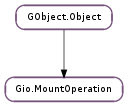

| Subclasses: | Gtk.MountOperation |
|---|
| static | new() |
| get_anonymous() | |
| get_choice() | |
| get_domain() | |
| get_password() | |
| get_password_save() | |
| get_username() | |
| reply(result) | |
| set_anonymous(anonymous) | |
| set_choice(choice) | |
| set_domain(domain) | |
| set_password(password) | |
| set_password_save(save) | |
| set_username(username) |
| Name | Type | Flags | Description |
|---|---|---|---|
| anonymous | bool | r/w | Whether to use an anonymous user |
| choice | int | r/w | The users choice |
| domain | str | r/w | The domain of the mount operation |
| password | str | r/w | The password |
| password-save | Gio.PasswordSave | r/w | How passwords should be saved |
| username | str | r/w | The user name |
| Name | Parameters | Return | Description |
|---|---|---|---|
| aborted | Emitted by the backend when e.g. a device becomes unavailable while a mount operation is in progress. Implementations of Gio.MountOperation should handle this signal by dismissing open password dialogs. | ||
| ask-password | str, str, str, Gio.AskPasswordFlags | Emitted when a mount operation asks the user for a password. If the message contains a line break, the first line should be presented as a heading. For example, it may be used as the primary text in a #GtkMessageDialog. | |
| ask-question | str, list | Emitted when asking the user a question and gives a list of choices for the user to choose from. If the message contains a line break, the first line should be presented as a heading. For example, it may be used as the primary text in a #GtkMessageDialog. | |
| reply | Gio.MountOperationResult | Emitted when the user has replied to the mount operation. | |
| show-processes | str, GLib.Array, list | Emitted when one or more processes are blocking an operation e.g. unmounting/ejecting a Gio.Mount or stopping a Gio.Drive. Note that this signal may be emitted several times to update the list of blocking processes as processes close files. The application should only respond with Gio.MountOperation.reply () to the latest signal (setting Gio.MountOperation :choice to the choice the user made). If the message contains a line break, the first line should be presented as a heading. For example, it may be used as the primary text in a #GtkMessageDialog. | |
| show-unmount-progress | str, int, int | Emitted when an unmount operation has been busy for more than some time (typically 1.5 seconds). When unmounting or ejecting a volume, the kernel might need to flush pending data in its buffers to the volume stable storage, and this operation can take a considerable amount of time. This signal may be emitted several times as long as the unmount operation is outstanding, and then one last time when the operation is completed, with bytes_left set to zero. Implementations of Gio.MountOperation should handle this signal by showing an UI notification, and then dismiss it, or show another notification of completion, when bytes_left reaches zero. If the message contains a line break, the first line should be presented as a heading. For example, it may be used as the primary text in a #GtkMessageDialog. |
| Name | Type | Access |
|---|---|---|
| parent_instance | GObject.Object | r |
Bases: GObject.Object
Gio.MountOperation provides a mechanism for interacting with the user. It can be used for authenticating mountable operations, such as loop mounting files, hard drive partitions or server locations. It can also be used to ask the user questions or show a list of applications preventing unmount or eject operations from completing.
Note that Gio.MountOperation is used for more than just Gio.Mount objects – for example it is also used in Gio.Drive.start () and Gio.Drive.stop ().
Users should instantiate a subclass of this that implements all the various callbacks to show the required dialogs, such as #GtkMountOperation. If no user interaction is desired (for example when automounting filesystems at login time), usually None can be passed, see each method taking a Gio.MountOperation for details.
| Returns: | a Gio.MountOperation. |
|---|---|
| Return type: | Gio.MountOperation |
Creates a new mount operation.
| Returns: | True if mount operation is anonymous. |
|---|---|
| Return type: | bool |
Check to see whether the mount operation is being used for an anonymous user.
| Returns: | an integer containing an index of the user’s choice from the choice’s list, or %0. |
|---|---|
| Return type: | int |
Gets a choice from the mount operation.
| Returns: | a string set to the domain. |
|---|---|
| Return type: | str |
Gets the domain of the mount operation.
| Returns: | a string containing the password within op. |
|---|---|
| Return type: | str |
Gets a password from the mount operation.
| Returns: | a Gio.PasswordSave flag. |
|---|---|
| Return type: | Gio.PasswordSave |
Gets the state of saving passwords for the mount operation.
| Returns: | a string containing the user name. |
|---|---|
| Return type: | str |
Get the user name from the mount operation.
| Parameters: | result (Gio.MountOperationResult) – a Gio.MountOperationResult indicating how the request was handled |
|---|
Emitted when the user has replied to the mount operation.
| Parameters: | anonymous (bool) – boolean value. |
|---|
Sets the mount operation to use an anonymous user if anonymous is True.
| Parameters: | choice (int) – an integer. |
|---|
Sets a default choice for the mount operation.
| Parameters: | password (str) – password to set. |
|---|
Sets the mount operation’s password to password.
| Parameters: | save (Gio.PasswordSave) – a set of Gio.PasswordSave flags. |
|---|
Sets the state of saving passwords for the mount operation.